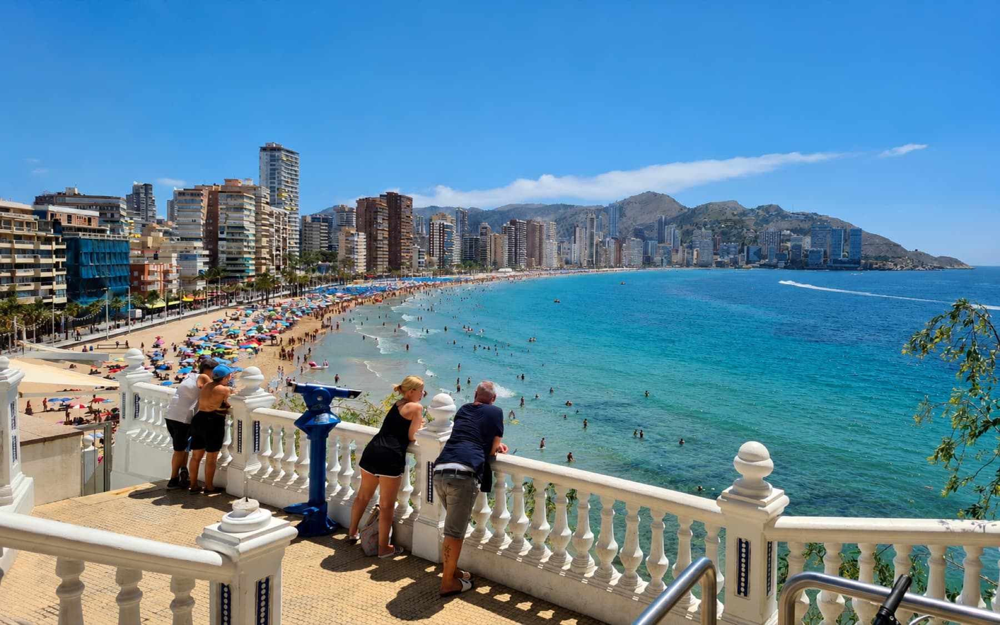
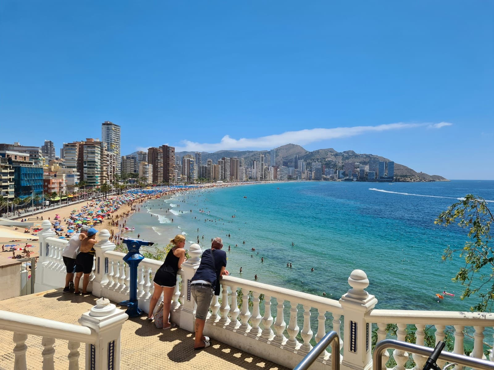
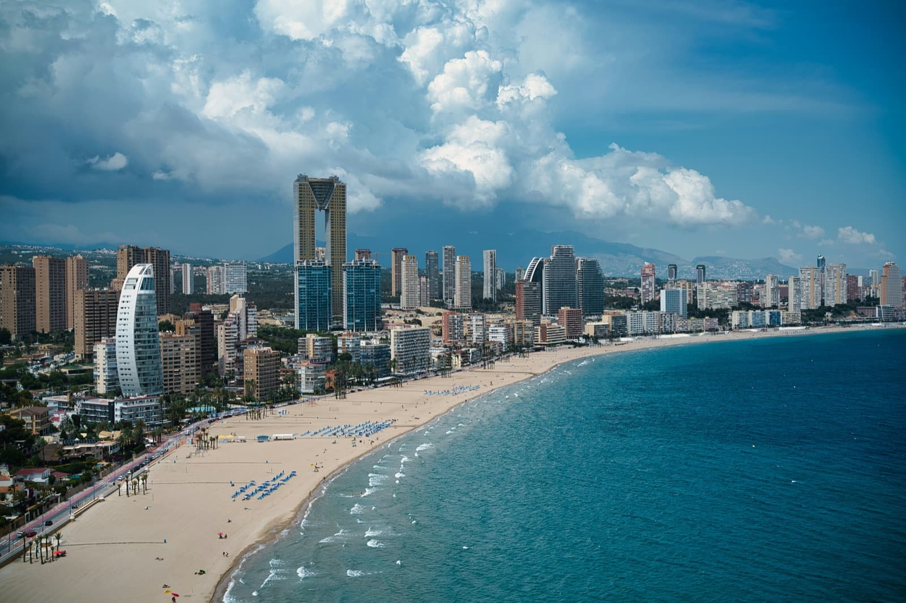
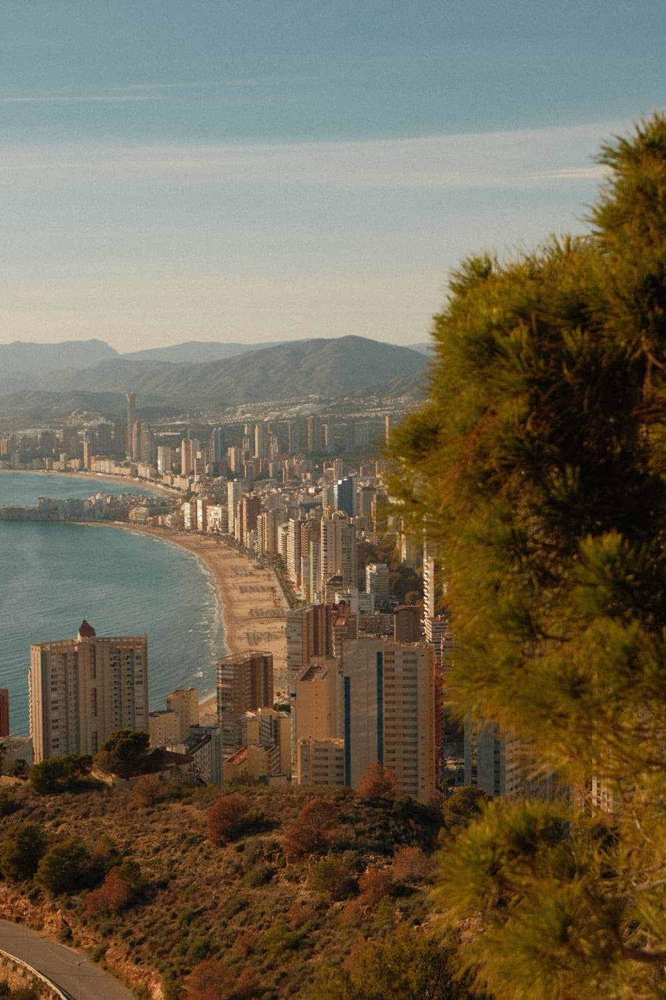
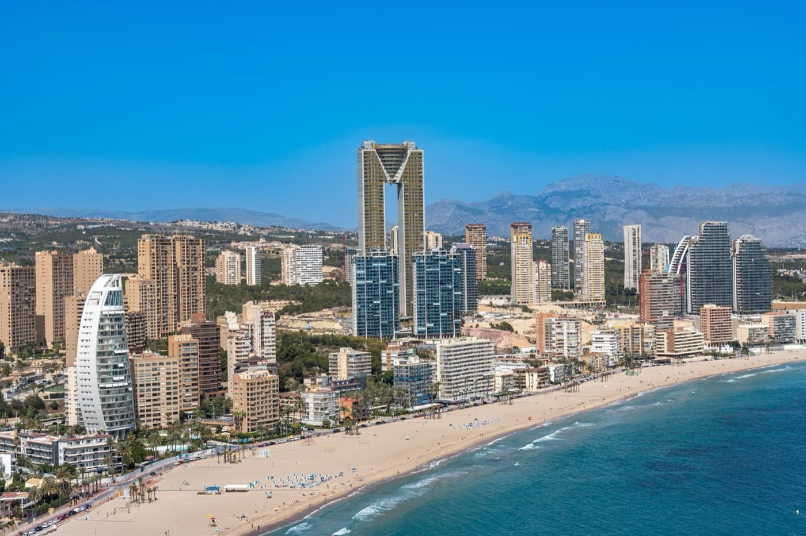
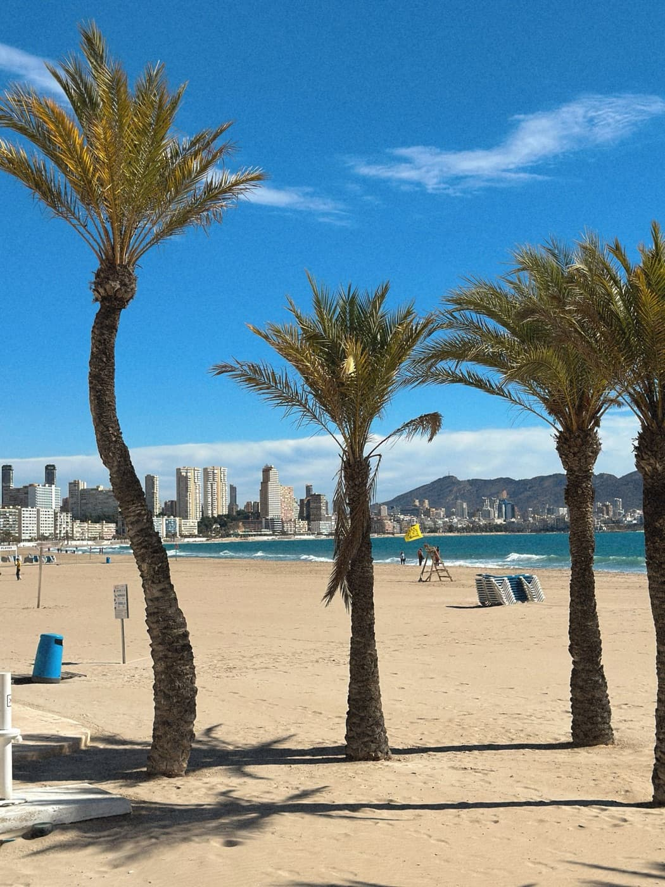
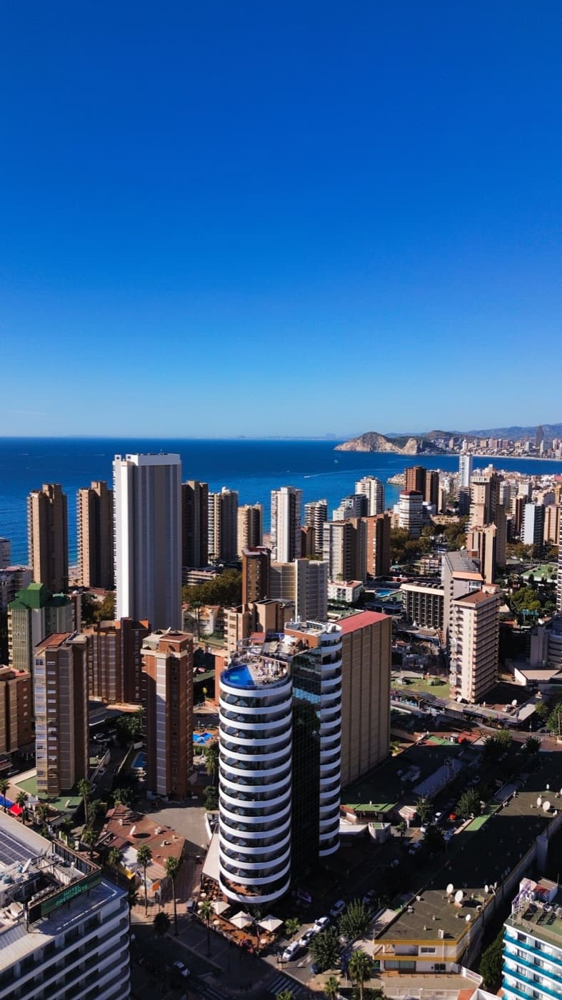

Benidorm
Dos grandes bahías, más de 300 días de sol y un skyline único. Aquí están nuestros alojamientos, y qué hacer a su alrededor.
Los barrios

Playa de Levante
La animada media luna dorada: sol todo el día, cafés en el paseo y el mejor ambiente de la ciudad.
Ideal para playa, ocio nocturno, restaurantes
1 alojamiento en Playa de Levante
Playa de Poniente
La bahía más tranquila y amplia: arena familiar, el skyline de Intempo y largos paseos al atardecer.
Ideal para familias, atardeceres, amplitud
1 alojamiento en Playa de Poniente
Casco Antiguo
Calles encaladas, bares de tapas y el Balcón del Mediterráneo entre las dos playas.
Ideal para tapas, encanto, vistas
1 alojamiento en Casco Antiguo
Rincón de Loix
Complejos residenciales más tranquilos con piscinas, a un paseo del extremo de la playa de Levante.
Ideal para piscinas, tranquilidad, precio
1 alojamiento en Rincón de Loix
- Cala de Finestrat
- Una cala de arena resguardada justo al oeste de Poniente, con su propio paseo de cafés y un ritmo más pausado.
Ideal para aguas tranquilas, familias, tardes junto al mar
1 alojamiento en Cala de Finestrat - Sierra Cortina
- Una ladera residencial entre Benidorm y Finestrat, junto a los campos de golf y cerca de Terra Mítica, con vistas amplias hasta la bahía.
Ideal para golf, espacio, vistas
1 alojamiento en Sierra Cortina
Cosas que merecen la pena
- El Balcón del Mediterráneo
- El mirador blanco entre las dos playas: la postal clásica de Benidorm al atardecer.
- Tapas en el casco antiguo
- Piérdete por el casco antiguo entre tascas, vermút y el marisco más fresco.
- Sendas de la Sierra Helada
- Camina por los acantilados sobre Levante para ver toda la bahía hasta la isla.
- Isla de Benidorm
- Cruza en el pequeño ferry a la isla para hacer snorkel y una tarde más tranquila.
- Parques temáticos
- Terra Mítica, Aqualandia y Terra Natura: a un corto trayecto, un gran día.
- Atardeceres en Poniente
- La amplia playa de poniente es el lugar ideal cuando el sol cae al mar.
Benidorm en imágenes

La bahía desde el aire 
Una cala escondida 
Orillas entre palmeras 
Atardecer en la playa 
Veleros junto al puerto 
Un skyline inconfundible
Encuentra tu base en Benidorm
Cuéntanos tus fechas y quiénes venís. Respondemos personalmente, normalmente en menos de una hora.